Humanis memiliki check clock dengan 2 cara. Bingung bagaimana cara menggunakan check clock humanis? Silakan ikuti langkah berikut:
A.
Check Clock dengan mengaktifkan biometrik
1.
Klik ikon finger pada halaman dashboard humanis mobile apps Anda
2.
Anda akan diarahkan menuju detail halaman check clock
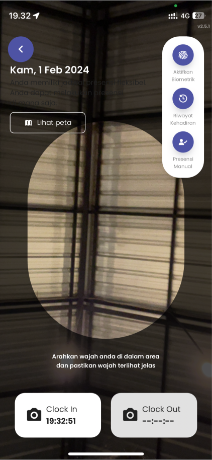
3.
Selanjutnya klik tombol aktifkan biometrik yang terletak pada pojok kanan atas
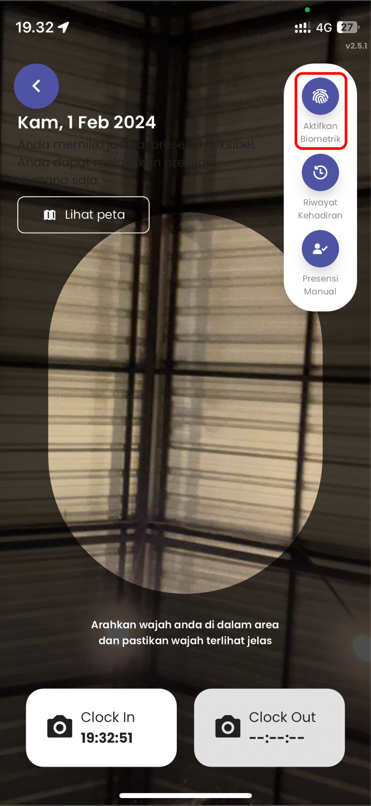
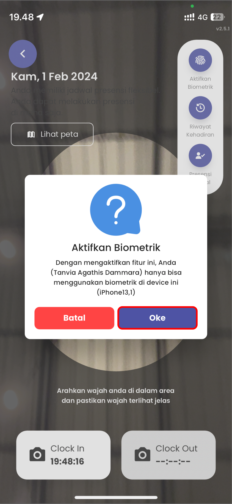
4.
Berhasil mengaktifkan biometrik maka saat check clock dapat menggunakan button fingerprint atau face id
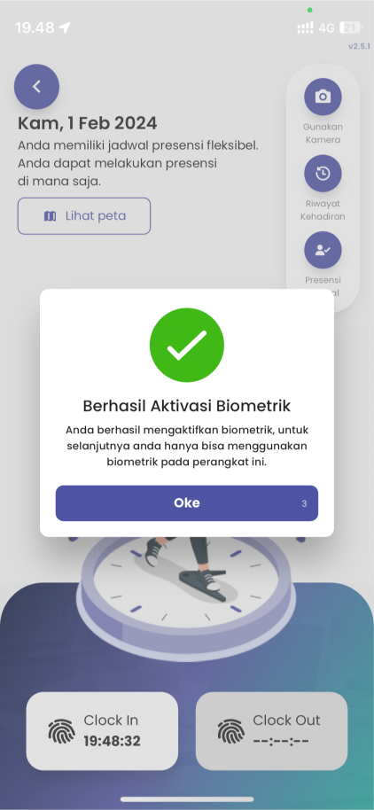
5.
Klik tombol finger yang terletak di bagian bawah (clock in untuk masuk dan clock out untuk keluar)
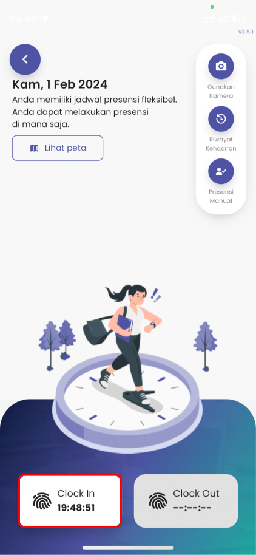
6.
Inputkan fingerprint / face id
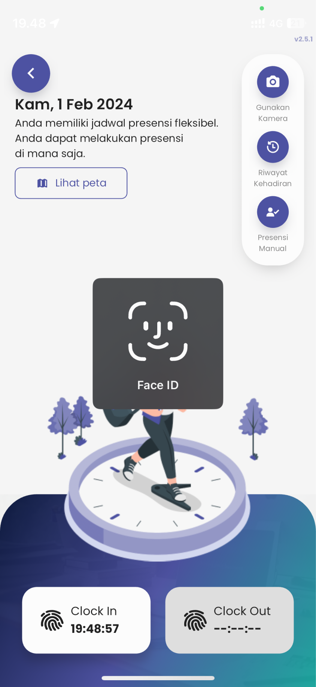
7.
Setelah berhasil check clock tunggu beberapa saat sampai muncul alert notifikasi “Berhasil Presensi”
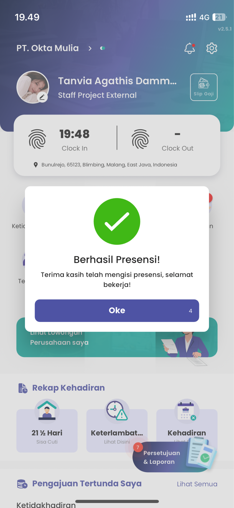
8.
Setelah berhasil, Anda akan langsung diarahkan ke halaman beranda humanis dan jam check clock Anda secara otomatis akan terecord secara realtime
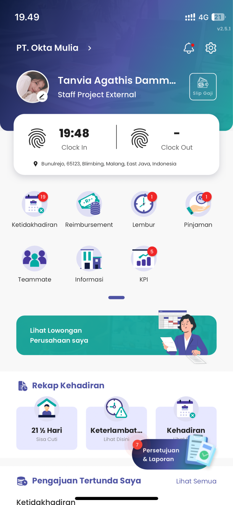
B.
Ketika mobile Anda tidak memiliki fitur fingerprint/sudah tidak bisa digunakan atau memang ingin menggunakan foto kamera saat check clock. Anda bisa mengikuti langkah berikut:
1.
Klik ikon finger pada halaman dashboard humanis mobile apps Anda
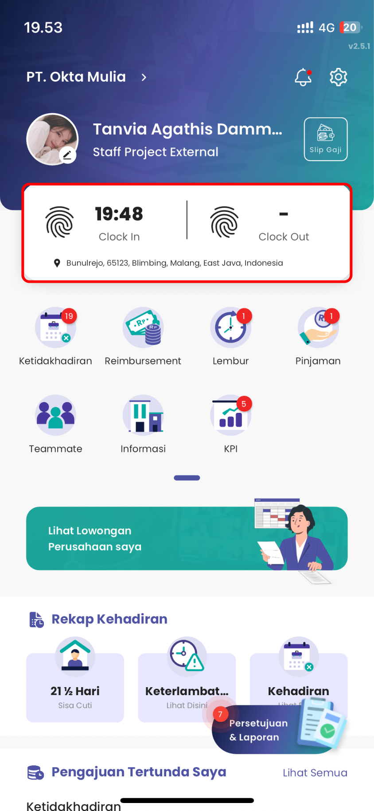
2.
Anda akan diarahkan menuju detail halaman check clock
3.
- Jika fingerprint mobile tidak bisa digunakan, default detail halaman check clocknya auto diarahkan menggunakan kamera
- Jika Anda memang ingin menggunakan kamera, maka anda bisa klik button kamera yang berada di pojok kanan atas terlebih dahulu
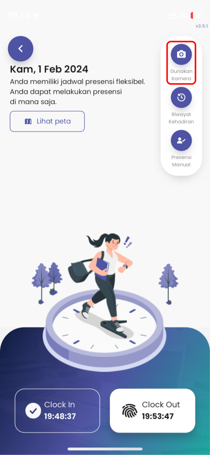
4.
Selanjutnya klik tombol clock in/clock out
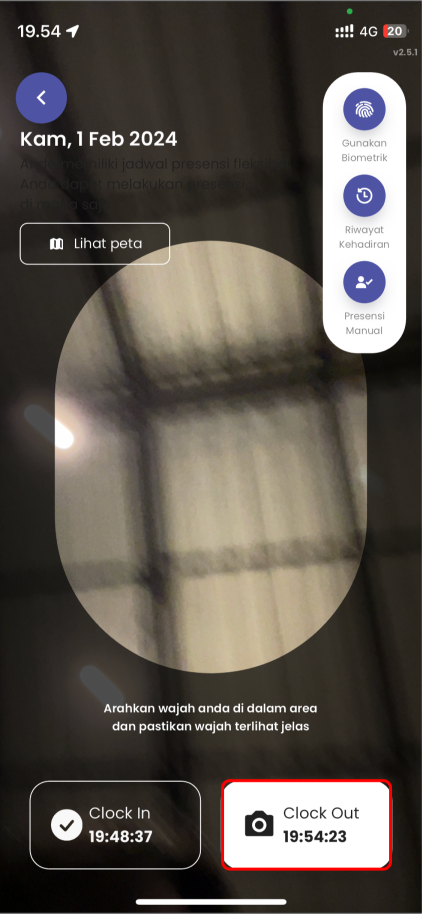
5.
Tunggu beberapa saat sampai muncul notifikasi berwarna hijau “Berhasil Presensi”
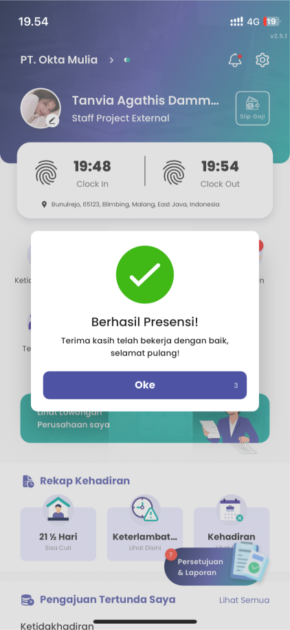
6.
Setelah berhasil, Anda akan langsung diarahkan ke halaman beranda humanis dan jam check clock Anda secara otomatis akan terecord secara realtime